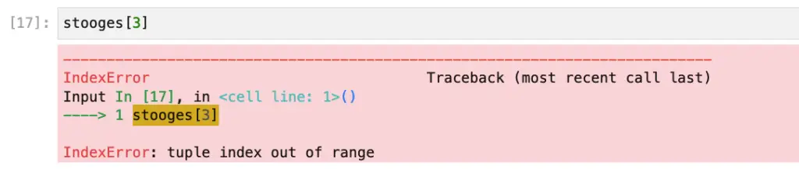

Python Indexing and Slicing: Complete Tutorial With Hands-On Exercises
Almost all Python developers encounter indexing early on when they learn about lists. As you probably already know, Python lists have zero-based indexes. That is to say, given a list named movies, for example, movies[0] returns the first element in the ist, while movies[len(movies)-1] returns the last element.
So far, there’s nothing to see here, folks. Yes, for newcomers, counting from zero to nine for a list of ten things seems a bit weird at first. But Python’s not unique in this – most of the top programming languages in use today index in the same way. These include C, C++, Java, C#, and JavaScript.
What makes indexing in Python worth writing about is not the overlap with other languages but the ways it stands out. Several features of Python indexes make it different from other languages.
Indexing has nearly been banished from Python’s loops. They’re still available, but using them in for loops is not the norm.
You can use negative indexes beginning with -1 to index from the end of a sequence. -1 returns the last item, -2 returns the next to last, etc.
A powerful, extended form of indexing, slicing, can be used to select subsequences. By using slicing in conjunction with negative indexes, you can obtain the reverse of a sequence. You can also use slicing to sample a sequence at various points.
If you’re new to indexing and slicing in Python, those bullet points may strike you as pretty abstract. But don’t worry. We’ll dig into several examples of how this works in practice in this article. Moreover, we’ve included several exercises at the end to help reinforce what you’ve learned.
Simple Positive Indexing
You may already know about this feature, but to ensure we’re all starting in the same place, let’s start with some simple examples of positive indexing, using a list, a tuple, and a string. As shown here, an index is simply a number enclosed in square brackets that you place after the sequence’s name.
# Simple positive indexing, zero based
numbers = [42, 1941, 1066, 1969]
indexes = "Super simple!"
stooges = ("Moe", "Larry", "Curly")
print(numbers[0])
last_index = len(indexes) - 1
print(indexes[last_index])
print(f"The funniest stooge was {stooges[2]}.")
Output:
42
!
The funniest stooge was Curly.
Again, in all cases, the lower bound of the sequence is zero, and the upper bound is the sequence’s length minus one. Using an index outside this range causes Python to raise an IndexOutOfBounds error.

OK, at this point, you know that Python uses zero-based indexes, which will be familiar to you if you have coded in Java, C, C#, or JavaScript. Next, let’s get into some Python-only fun.
As for all indexes, for mutable sequences (the most important of which is the list type), indexing can also be used to set values as well as retrieve them.
numbers = [1,2,8,4]
print(numbers)
# Change third item in the list
numbers[2] = 3
print(numbers)
Output:
[1, 2, 8, 4]
[1, 2, 3, 4]
Negative Indexing In Python
Negative indexing in Python refers to accessing a sequence, such as a list, tuple, or string, using negative numbers indices. Negative indexing starts from the end of the sequence and counts backward. Thus, you can get the last element with an index of -1. The second to last element can be accessed using -2, and so on.
Using negative indices can be helpful when working with lists of variable length. They allow you to access elements from the end of the list without knowing the length of the list in advance.
Let’s grab the last character from a line of the Zen of Python, using positive and negative indexing:
saying = "Simple is better than complex"
# Get the last character using positive indexing
print(saying[len(saying) - 1])
# Using negative indexing.
print(saying[-1])
Output:
x
x
Negative indexing becomes even more helpful when combined with slicing, where it can also be used to reverse a sequence. For example, if you have a list of objects and you want to reverse the sort order of the list, you can use negative indexing to do so.
Getting an Index in a Python For Loop
As we mentioned above, in general, indexes are not needed in Python loops. Many languages have a syntax like this, including Java, C#, and (since C++ 11), C++. Nevertheless, those languages let you revert to using a for loop like those found in C, where an index must still be explicitly used. If you’re curious, here’s how C does this:
#include <stdio.h>
int main(void) {
const int LEN = 3;
char chars[LEN] = {'A', 'B', 'C'};
for(int i = 0; i < LEN; i++) {
printf("Found a char at index %d: %c\n", i, chars[i]);
}
}
Output:
Found a char at index 0: A
Found a char at index 1: B
Found a char at index 2: C
In Python, of course, we can iterate through the list much more simply, so we’d generally do this:
chars = ['A', 'B', 'C']
for char in chars:
print(char)
Output:
A
B
C
This simplicity is usually a good thing – unless of course we want or need to use the index as we did in C. Not to worry, the enumerate function will allow us to get both the index and the value at the same time. Here’s how we can get the same output as the C code produces:
chars = ['A', 'B', 'C']
for index, char in enumerate(chars):
print(f"Found a char at index {index}: {char}")
Python Slices: The Index on Steroids
If I had to name a feature where Python indexing is very different from other languages, it would be the slice feature. A slice is similar to an index, but whereas an index lets us retrieve one element, a slice expression lets us retrieve or set many elements at once. As with indexes, the expression is placed after the sequence name in square brackets, and has the following basic syntax:
sequence[start:stop:step]
Here are the meanings of the various steps:
The value for start is an integer representing the beginning of the slice. If omitted, it defaults to zero, i.e., the beginning of the sequence.
The value for is an integer representing the last index you want, plus one. If omitted, it defaults to the length of the sequence, but since this is one past the index, the default for “stop” is effectively the end of the sequence.
The final colon and sequence value is often omitted, and if so it defaults to 1. If this value is negative, the slice is extracted in reverse order.
The following example shows this more clearly. Let’s start with examples where we slice in a positive order:
numbers = [1,2,3,4,5]
# Indexes zero to two, with zero explicit or not
print("Indexes zero to two")
print(numbers[0:3])
print(numbers[:3]) # Indexes zero to two, same as above
# Indexes 3 to end of the list, explicit or not
print("\nIndexes 3 to end of the list")
print(numbers[3:len(numbers)])
print(numbers[3:])
# Make a shallow copy of the list
print("\nList copy")
print(numbers[:])
# Step by 2, i.e., get every other number
print("\nStep by two:")
print(numbers[::2])
Output:
Indexes zero to two:
[1, 2, 3]
[1, 2, 3]
Indexes 3 to end of the list:
[4, 5]
[4, 5]
List copy:
[1, 2, 3, 4, 5]
Step by two:
[1, 3, 5]
Slicing is often used instead of a method like “substring” to get parts of a string. It can be very handy, for example, to remove a fixed-length prefix from a string:
# Remove the "id-" from the list:
order_items = ["id-999", "id-19098", "id-2"]
cleaned = [item[3:] for item in order_items]
print(cleaned)
Output:
['999', '19098', '2']
Slicing in reverse is a simple matter of using a negative step value Using negative numbers, the start value will be greater than the end value:
numbers = [1,2,3,4,5]
print(numbers[::-1])
print(numbers[4:2:-1])
Output:
[5, 4, 3, 2, 1]
[5, 4]
Slicing in reverse is much less common than working with subsets of an existing list, but it is popular as a Python interview question: “Given a string, s = 'Life of Brian' how would you reverse it?” Doing in a loop is the “B” answer at best; s[::-1] is probably what your interviewer has in mind.
Assignment Behavior When Slicing
Assigning to a slice replaces the slice with the contents of another list or iterable object. It behaves like search and replace in the sense that it’s very flexible with respect to size. The number of items added doesn’t need to match the number of items in the slice The list grows or shrinks to accommodate the new elements.
For example:
count_to_ten = [num for num in range(1,11)]
count_to_ten[3:6] = [20, 30]
count_to_ten
count_to_ten[6:8] = [100, 200, 300, 400]
print(count_to_ten)
Output:
[1, 2, 3, 20, 30, 7, 100, 200, 300, 400, 10]
Note that for strings especially, though it’s possible to replace segments using slices, it’s often much more convenient to use the “replace” method to do so.
Python Indexing and Slicing Exercises
Here are several exercises and sample problems for indexing and slicing in Python Try your hand at these.
What does the code below produce, and what’s it doing (You can run it to find out if you need to) Can you replace everything except the import with a print statement and a concise slice expression?
from string import ascii_uppercase
subset = ""
for idx, letter in enumerate(ascii_uppercase):
if idx %4 == 0:
subset = subset + letter
print(subset)
Given the ascii_upercase we imported above, print the alphabet backward using a slice expression.
There’s a needle in the haystack below Extract it from the string In addition to a slice expression, you’ll need the
indexmethod on the str class and thelenfunction:
example = "Hay hay hay hey hey needle nah nah nah nah, hey hey, goodbye."
4 Using a slice expression, slice the list below to produce a list with: [9,6,3]
count_to_ten = [num for num in range(1,11)]
print(count_to_ten)
Given the following code, write a concise expression to index the word shrubbery from the tokens array:
tokens = "Is there anywhere in this town where we could buy a shrubbery".split(" ")
print(tokens)
The index value can be used to look up the location of an item in a list or other sequence. It returns the item’s index. Given the code below, what would you expect
claim.index("Python")to return?
claim = "The best Python examples are on CodeSolid.com!".split(" ")
print(claim)
Given the following code, what does the first print statement do? What does the second print statement do?
greeting = "Hello"
print(greeting[4])
print(greeting[5])
How could you find the knights in the ‘introduction’ below?
introduction = “We are the knights who say ni!”